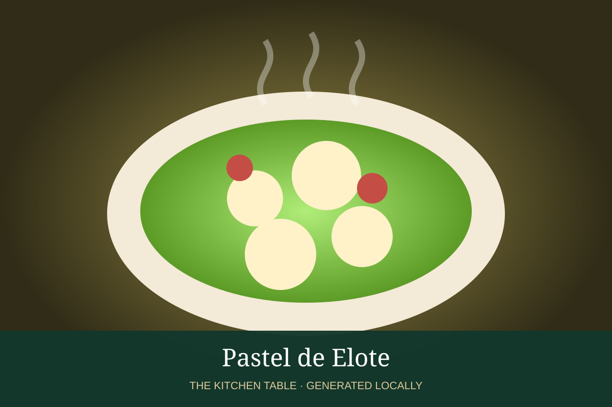

MEXICAN · DESSERTS & DRINKS
Pastel de Elote
Tender Mexican sweet-corn cake with a moist, lightly caramelized crumb.

Ingredients
- 4 cups corn kernels
- 4 eggs
- 1 can sweetened condensed milk
- 1/2 cup butter, melted
- 1 tsp vanilla
- 1 cup flour
- 2 tsp baking powder
- Pinch salt
Method
- Blend corn, eggs, condensed milk, butter, and vanilla until mostly smooth.
- Fold in flour, baking powder, and salt.
- Bake in a greased pan at 350°F until golden and a tester emerges clean.
- Cool slightly and serve plain or with crema.